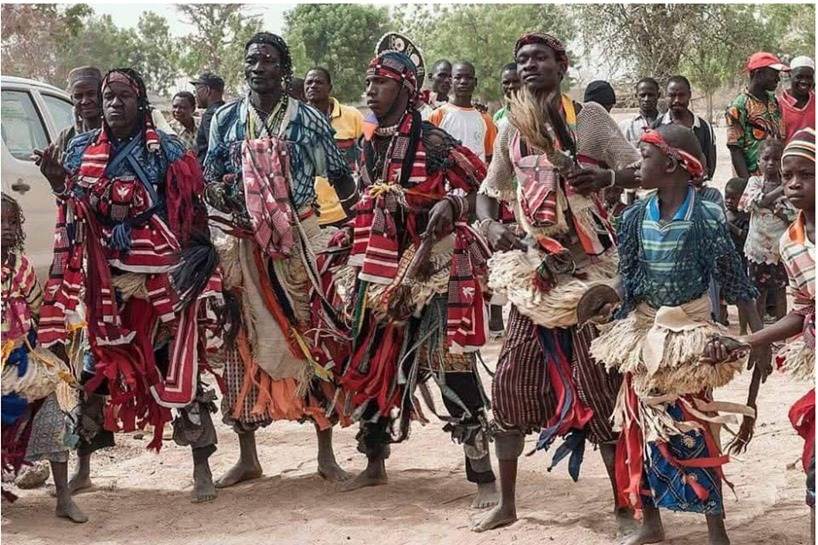

Présentation
La capitale et son rayonnement
Ouagadougou, capitale politique et administrative du Burkina Faso, concentre les institutions nationales, les ambassades, les grandes entreprises et les universités. C'est également la capitale culturelle avec le FESPACO (festival panafricain du cinéma) et le SIAO (salon international de l'artisanat).
Située au nord-est de la capitale Ouagadougou, la région de Sirba est une terre riche d’histoire et de traditions. Son patrimoine rappelle Naaba Oubri, troisième petit-fils du grand chef Ouédraogo, fondateur du royaume mossi de Wogdgo, l’ancêtre d’Ouagadougou. Cette région, qui s’étend aujourd’hui sur un territoire réorganisé en trois provinces, s’impose comme un véritable carrefour entre passé et modernité, offrant à la fois un patrimoine culturel exceptionnel et des opportunités touristiques en plein essor.
Depuis juillet 2025, le Burkina Faso a adopté un nouveau découpage administratif qui rebaptise l’ancienne région du Plateau-Central sous le nom de région de Sirba, en hommage à ses racines. Cette région est désormais composée de trois provinces distinctes : Ganzourgou, Kourwéogo et Oubritenga (parfois appelée Bassitenga). Chacune de ces provinces contribue à la richesse culturelle et touristique de la région. Ganzourgou est réputée pour ses terres fertiles et ses marchés traditionnels dynamiques, tandis que Kourwéogo se distingue par ses activités pastorales et artisanales. Oubritenga, quant à elle, est reconnue pour son patrimoine mossi ancestral et sa proximité avec le célèbre parc de sculptures de Laongo.

Le patrimoine culturel de Sirba est profondément ancré dans les traditions mossi. Les cérémonies coutumières, où les danses et musiques royales occupent une place centrale, témoignent du lien vivant avec l’héritage historique régional. L’artisanat local, avec ses techniques ancestrales de tissage, de poterie, de sculpture sur bronze et de travail du cuir, perpétue des savoir-faire transmis de génération en génération. Ces créations portent souvent des motifs symboliques liés à l’histoire et aux croyances des Mossi, offrant ainsi un pont entre l’art et l’identité culturelle.
Cette région est également un haut lieu de la création artistique contemporaine grâce au parc de sculptures de Laongo. Ce site exceptionnel à ciel ouvert accueille des artistes venus du monde entier qui transforment les blocs de granite en œuvres monumentales. Ce dialogue entre la nature brute et la créativité humaine attire chaque année de nombreux visiteurs, amateurs d’art et de nature.

Le dynamisme culturel de Sirba se manifeste aussi à travers plusieurs festivals majeurs qui rythment la vie locale. Le Festival International de Sculpture de Laongo est sans doute l’événement le plus connu, mettant en lumière le travail des sculpteurs venus de divers horizons. Les Journées Culturelles de Ziniaré célèbrent quant à elles la musique, la danse et la gastronomie, tandis que le Festival des Masques et Traditions du Ganzourgou valorise les arts sacrés et les cérémonies traditionnelles. Ces manifestations participent non seulement à la préservation des patrimoines immatériels, mais aussi à la promotion du tourisme culturel.

L’accueil des visiteurs dans la région de Sirba s’appuie sur une offre hôtelière variée. À Ziniaré, capitale régionale, plusieurs hôtels tels que l’Hôtel Laongo, l’Auberge Napadé et le Ziniaré Palace Hôtel proposent un hébergement confortable avec des prestations adaptés aux touristes. De plus, dans les provinces voisines, des gîtes ruraux et campements permettent aux visiteurs de s’immerger pleinement dans la vie locale et la nature environnante.

Les sites incontournables de Sirba reflètent cette richesse multiple. Le mausolée historique de Naaba Oubri demeure un lieu de mémoire important où se perpétuent les rites royaux. Le parc de sculptures de Laongo, quant à lui, fascine par son mélange unique d’art et de paysage. Enfin, les marchés artisanaux de Ziniaré et les villages environnants offrent une plongée authentique dans la culture mossi et ses traditions vivantes.